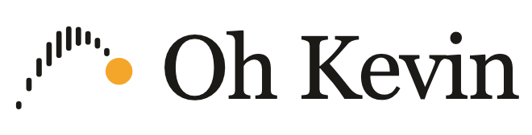
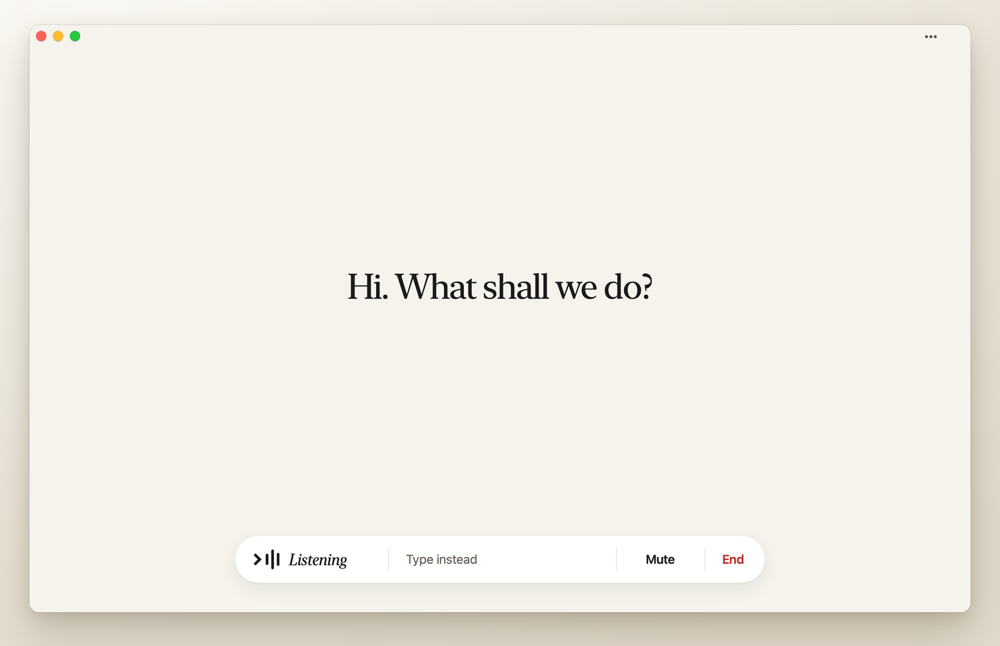

Talk it through
Start a call and think out loud. A plan, a bug, half an idea. Kevin answers at once, in a voice, and the idea moves as fast as you can talk.
Hand it off
Ask, and Claude Code takes the job. Go stir the pot. Each job runs on its own, so start another, ask how one is going, or stop it.
Say yes
When it needs you, Kevin calls you over. Say “yes”, or click Approve, and it carries on.

Have a real conversation with Claude Code.
Think out loud. It answers out loud. Then it gets on with the work, and calls you back only when it matters.
Download for Mac Star on GitHub
Free and open source. Apple silicon, macOS 26.
